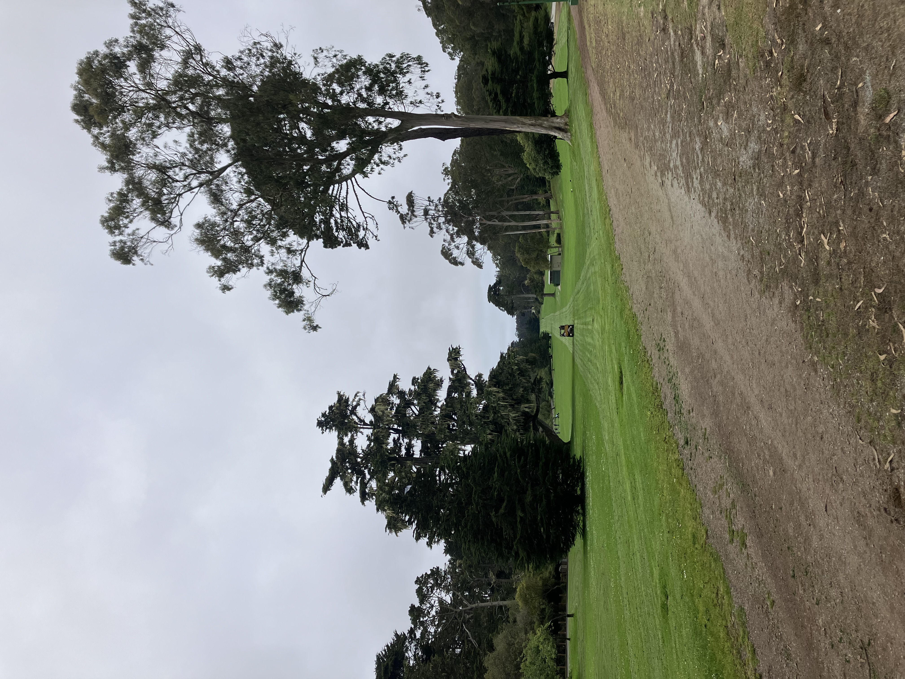
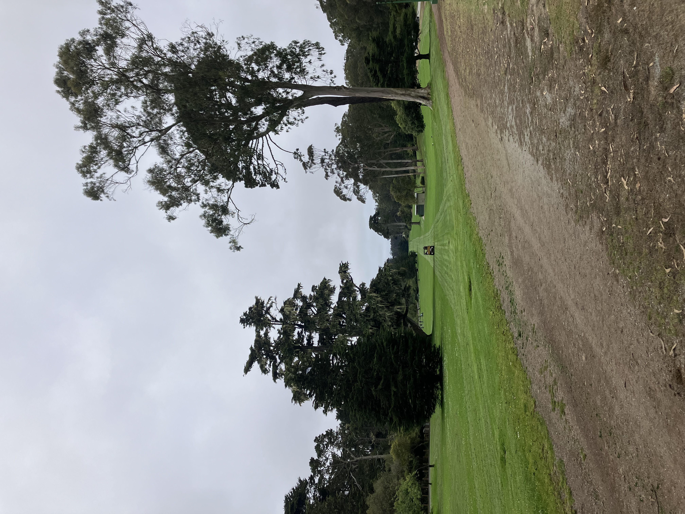

Today I went on a run in golden gate park. Turns out I went the day before the west end of the park will close for one month.
I encountered many fences, lawn mowers,and workers getting ready for the festivals. It was green and wet.

 
